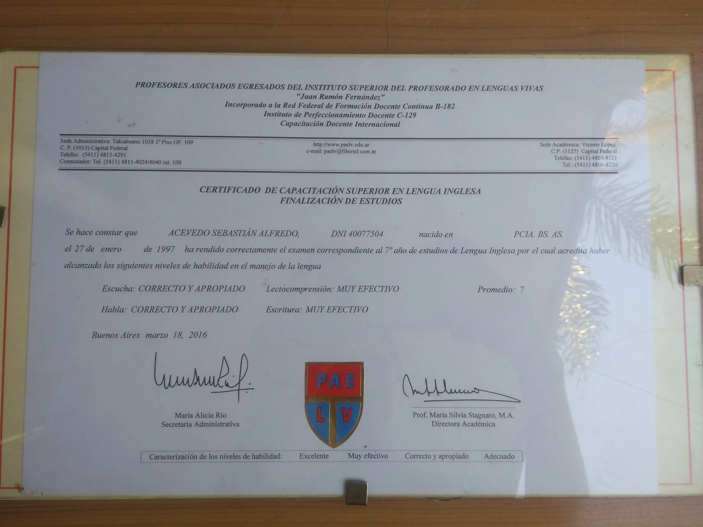
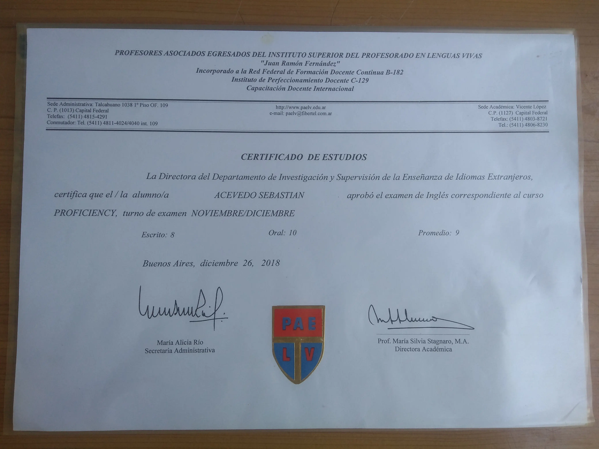
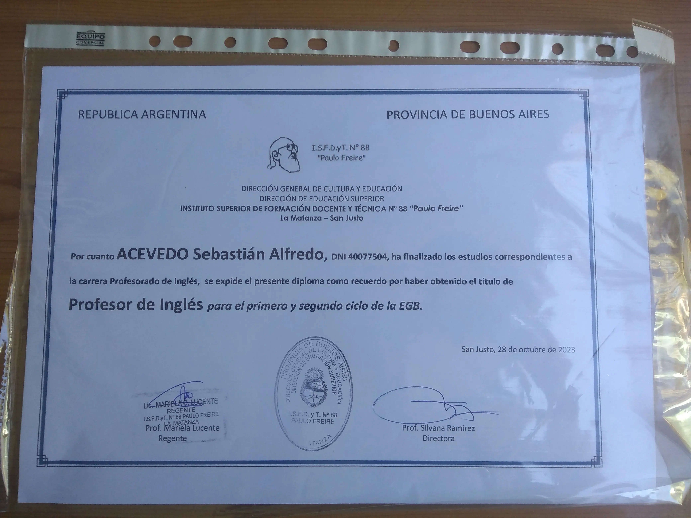

Skills
HTML5

CSS3

JavaScript

Git

React

Tailwind CSS

Hola, me llamo Sebastián Acevedo. Soy de Argentina. Estoy buscando mi primera experiencia laboral en el mundo del desarrollo web. Me interesa todo lo relacionado a la tecnología. Formé parte de dos proyectos locales, la creación de un sitio web publicitario para el C.F.P. N° 421 'Rafael Cigliutti' de la Cámara de Industria y Comercio de La Matanza, Buenos Aires, en la fecha del 26 de octubre de 2022 y un sitio web que incluyó una sala de escape digital con un sistema de ránking implementado, presentado en una exposición virtual educativa de Rafael Castillo el 22 de noviembre de 2022. También soy profesor de inglés para Educación Primaria. Mis pasatiempos incluyen la música (mi género favorito es el rock progresivo) y el arte plástico, y también me interesa todo aquello relacionado a la fotografía.
Me formé y realicé mis estudios en el Instituto Granada, localizado en Isidro Casanova, obteniendo el título de bachiller en Ciencias Sociales.
En este instituto adquirí un certificado de capacitación superior en lengua inglesa.
En este año obtuve el certificado de inglés internacional.
Poseo el título intermedio de profesor de inglés para Educación Primaria.
Hice mis primeros pasos en el mundo de desarrollo web en este instituto, con sede en San Justo.
Formé parte de un proyecto local para una exposición de Plaza Ciencia en San Justo. Dicho proyecto consistió en un sitio web publicitario para el Centro de Formación Profesional N° 421 “Rafael Cigliutti” con sede en San Justo, publicado el 26 de octubre de 2022. Este sitio ofrece cursos gratuitos de Programación Web, Diseño y Fabricación digital 3D y Fabricación de máquinas impresoras 3D. Además, participé en la creación de un sitio web que incluyó una sala de escape digital con un sistema de ránking implementado, presentado en una exposición virtual educativa de Rafael Castillo el 22 de noviembre de 2022. Ver enlace de interés
HTML + CSS + JavaScript
Proyecto personal y además fue el primer proyecto usando tecnologías frontend. Es un blog que muestra una recolección tabular de experiencias basadas en un videojuego, combinando un pasatiempo personal con tecnología frontend.
HTML + CSS + AJAX
Aplicación que envía peticiones a una API para obtener información del clima de diferentes regiones. Cuenta con imágenes adaptables a la condición climática del momento. Diseño responsivo.
React + Tailwind
Aplicación de lista de tareas. Cuenta con el uso de localStorage para almacenar datos en el navegador. Diseño responsivo.

Los datos han sido enviados